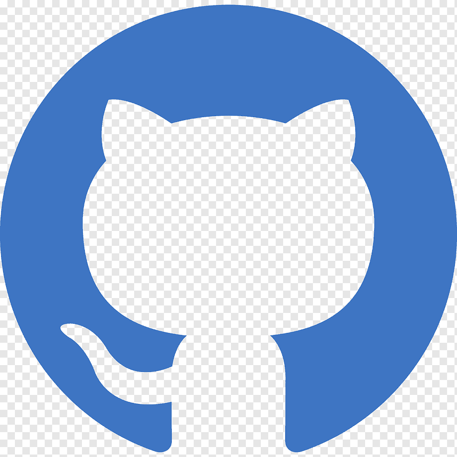
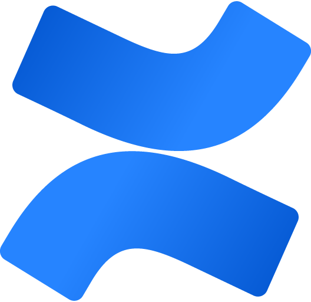
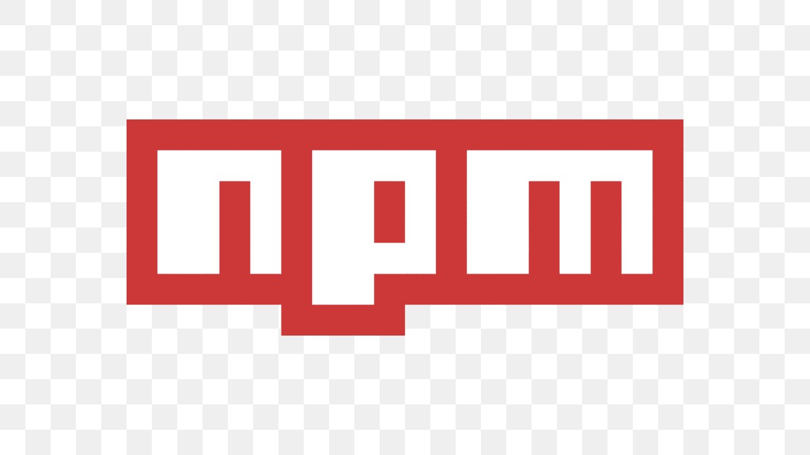
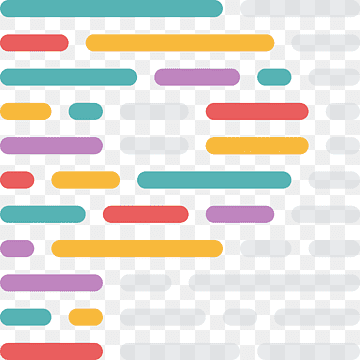
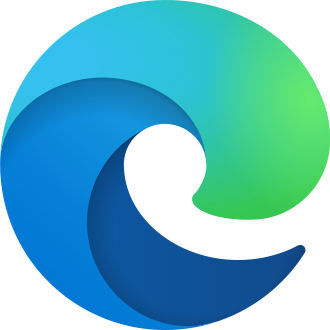
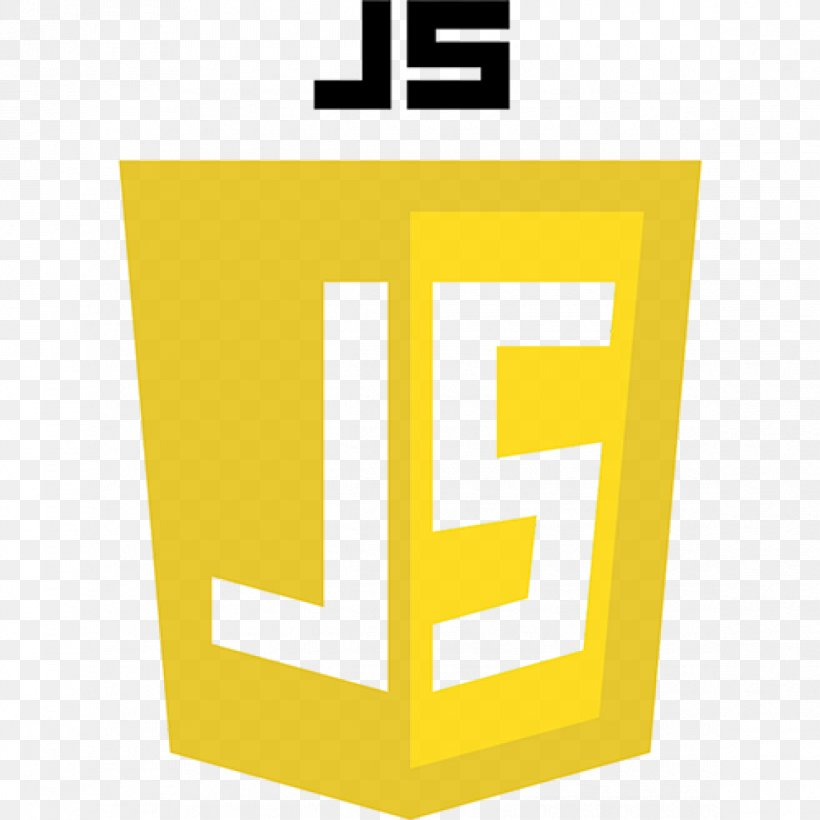
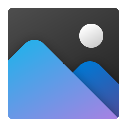
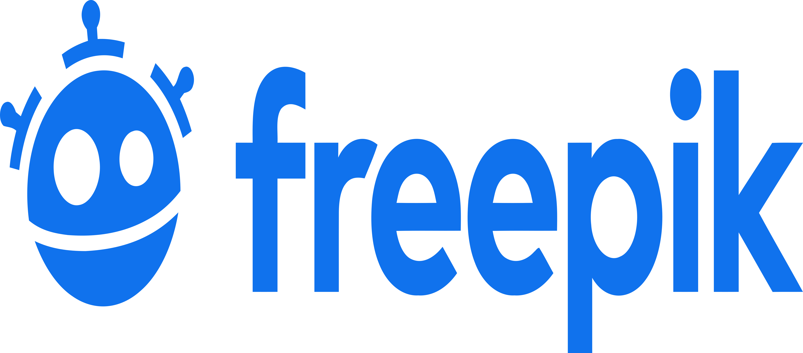

📚 Referências Utilizadas no Projeto
Nesta seção listamos os principais programas, navegadores e tecnologias utilizados no desenvolvimento do
QAPlayground.
Cada item é essencial para garantir qualidade, produtividade e melhoria contínua.
Clique nos logos ou nos links para
acessar as páginas oficiais.
 Copilot (Microsoft)
Copilot (Microsoft)
-
Sistema de IA utilizado diretamente no desenvolvimento, refinamentos, ajustes, melhorias, correção de bugs e evolução contínua.
🔗 Página oficial do Copilot
 Visual Studio Code
Visual Studio Code
-
Editor de código principal da Microsoft, essencial para escrita, depuração e gerenciamento dos códigos em JavaScript, CSS, HTML e imagens.
🔗 Página oficial do Visual Studio Code

GitHub
-
Hospedagem e versionamento do projeto, permitindo colaboração e controle de versões.
🔗 Página oficial do GitHub
 Figma
Figma
-
Ferramenta de design colaborativo utilizada para prototipação e definição de interfaces.
🔗 Página oficial do Figma

Confluence (Atlassian)
-
Plataforma colaborativa utilizada para documentação, gestão de conhecimento e organização de projetos no QAPlayground.
🔗 Página oficial do Confluence
CounterAPI
-
Serviço utilizado para implementar o contador de visitantes e calcular a média de avaliações do QAPlayground.
🔗 Página oficial do CounterAPI
Jest
-
Framework de testes utilizado para validar unidades e integração no QAPlayground.
🔗 Página oficial do Jest
Testing Library
-
Biblioteca usada para testes que simulam interação do usuário em componentes e páginas.
🔗 Página oficial da Testing Library
Husky
-
Ferramenta de hooks do Git usada para rodar automaticamente os testes (
npm test) no pre-commit.
🔗 Página oficial do Husky

NPM
-
Gerenciador de pacotes utilizado para instalar e manter dependências do projeto QAPlayground.
🔗 Página oficial do NPM

Prettier
-
Ferramenta de formatação de código utilizada para padronizar automaticamente o estilo em JavaScript, CSS e HTML.
🔗 Página oficial do Prettier
 GitHub Actions
GitHub Actions
-
Plataforma de automação utilizada para rodar testes e futuramente realizar deploy contínuo do QAPlayground.
🔗 Página oficial do GitHub Actions
🌍 Navegadores
-
Google Chrome: navegador utilizado para testes funcionais, responsividade e depuração.
🔗 Página oficial do Google Chrome -

Microsoft Edge: navegador utilizado para testes funcionais e integração com ferramentas da Microsoft.
🔗 Página oficial do Microsoft Edge -
Mozilla Firefox: navegador utilizado para validação de compatibilidade e desempenho em diferentes ambientes.
🔗 Página oficial do Mozilla Firefox
🌐 Tecnologias Web
-
 HTML5: linguagem de marcação para estruturar páginas web.
HTML5: linguagem de marcação para estruturar páginas web.
🔗 Referência MDN HTML -
 CSS3: linguagem de estilo para design e layout.
CSS3: linguagem de estilo para design e layout.
🔗 Referência MDN CSS -

JavaScript: linguagem de programação para interatividade.
🔗 Referência MDN JavaScript
🖼️ Edição de Imagens
-

Fotos do Windows: utilizado para edição básica das imagens aplicadas nos quebra-cabeças.
🔗 Página oficial do Fotos do Windows
🌐 Banco de Imagens
-

Freepik: site utilizado para baixar imagens de referência, como robôs futuristas horizontais.
🔗 Página oficial do Freepik
🔧 Outras Ferramentas
- Espaço reservado para futuras referências de softwares, bibliotecas e serviços utilizados no projeto.